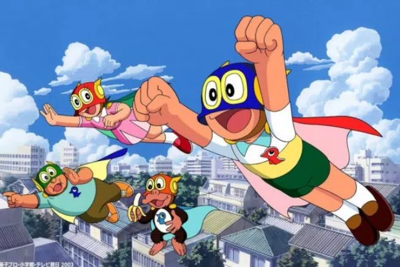

Perman
Perman (Japanese: パーマン, Hepburn: Pāman) is a Japanese manga series written and illustrated by the manga artist duo Fujiko Fujio about a clumsy boy, Mitsuo Suwa, who is chosen to apprentice to a powerful superhero to save the world along with other superheroes. The manga series was serialized in Weekly Shōnen Sunday in 1967. The first anime series was first produced in black-and-white in 1967. The second anime series was made in color in 1983 and films were released in 1983, 1984, 1985, 2003 and 2004. The manga Ninja Hattori-kun & Perman, which began serialization in 1984, was written by Abiko alone.

パーマン
(Pāman) |
| Genre |
Science-fiction |
| Created by |
Fujiko Fujio |
| Manga |
| Written by |
Fujiko Fujio |
| Published by |
Shogakukan |
| Magazine |
Weekly Shōnen Sunday etc. |
| Demographic |
Shōnen |
| Original run |
1966 – 1986 |
| Volumes |
8 |
| Anime television series |
| Music by |
Hiroshi Tsutsui |
| Studio |
Tokyo Entertainment |
| Original network |
TBS |
| Original run |
April 2, 1967 – April 14, 1968 |
| Episodes |
54 |
| Anime film |
| Perman: The Birdman Has Arrived!! |
| Studio |
Shin-Ei Animation |
| Released |
March 12, 1983 |
| Runtime |
25 minutes |
| Anime television series |
| Directed by |
Hiroshi Sasagawa
Sadayoshi Tominaga |
| Written by |
Fujiko Fujio |
| Music by |
Akihiko Takashima |
| Studio |
Shin-Ei Animation |
| Original network |
TV Asahi |
| English network |
-
India: Nickelodeon
-
Southeast Asia: Disney Channel
|
| Original run |
April 4, 1983 – July 2, 1985 |
| Episodes |
526 + 3 specials |
| Anime film |
| Ninja Hattori-kun + Perman: ESP Wars |
| Studio |
Shin-Ei Animation |
| Released |
March 17, 1984 |
| Runtime |
52 minutes |
| Anime film |
| Ninja Hattori-kun + Perman: Ninja Beast Jippō vs. Miracle Egg |
| Studio |
Shin-Ei Animation |
| Released |
March 16, 1985 |
| Runtime |
50 minutes |
| Anime film |
| Pa-Pa-Pa the Movie: Perman |
| Studio |
Shin-Ei Animation |
| Released |
March 8, 2003 |
| Runtime |
31 minutes |
| Anime film |
| Pa-Pa-Pa the Movie: Perman: Tako de Pon! Ashi wa Pon! |
| Studio |
Shin-Ei Animation |
| Released |
March 6, 2004 |
| Runtime |
32 minutes |
| Video games |
- Perman: Enban o Torikaese!! (1990)
- Perman Part 2: Himitsu Kessha Madoodan o Taose! (1991)
|
Summary
Mitsuo Suwa, a lazy young boy, meets an alien named Birdman, who is part of a group that maintains peace in the galaxy. Birdman recruits Mitsuo to become a Perman. Mitsuo is given three items.
- A helmet that multiplies the wearer's physical strength and serves as a mask.
- A cape that allows the wearer to fly and run with great speed.
- A badge that enables the wearer to breathe underwater and to communicate with Permans.
Birdman instructs Mitsuo that if a Perman's identity becomes known to others, his brain will be destroyed—which is reduced to being turned into an animal. To help keep Mitsuo's secret identity, Birdman will give Mitsuo a doppelgänger robot called a copy-robot, who takes Mitsuo's place when Mitsuo is on duty as Perman. During his duty as Perman, Mitsuo meets other Permans; Booby, Perko and Peryan, and they soon become best friends. Perman's story later revolves around the bonding between the Permans and their adventures of averting crime and disasters.
Main Characters
-
1. Mitsuo Suwa (須羽満夫 (Suwa Mitsuo) / Perman 1) Voiced by: Katsue Miwa
- Mitsuo/Perman is the protagonist of the series. He's 11 and a half-year-old young boy who's chosen as the first Perman by Birdman. He dislikes studying, being grounded, ghosts, and cockroaches. He is not very good at studying but he can do well if he tries hard. He has a crush on Michiko, a girl from his class. He's a big fan of the idol Sumire Hoshino, who's actually Perman 3/Pergirl.
- Mitsuo often acts lazy and dumps his work on his copy robot, but works hard when things get serious. As Perman, he is willing to do anything to please others, which sometimes lands him in trouble. At the end of the series, all his achievements as Perman were acknowledged by Birdman and he travels to the planet Bird star for training to become Birdman's successor. He seems to have not been returned to Earth because there is a depiction waiting for return in the era of "Doraemon" which later Hoshino Sumire as an older actress is in.
- However, there's a manga chapter "Return of Perman" he returns to Earth only for 2 hours.
-
2. Booby (ブービー, Būbī) / Perman 2 Voiced by: Hiroshi Ōtake
- Booby is a highly intelligent monkey referred to as "Perman 2". He was originally portrayed as living in a zoo and sneaking out at night to work, but later his character was retconned to be a pet chimp living with an old couple to facilitate his superhero duties. He cannot speak human language but communicates effectively through objects and gestures.
- Despite being a monkey, Booby behaves like a human and assists his colleagues with human affairs. In chapters where he's the main character, he collaborates with animals with whom he can communicate.
-
3. Sumire Hoshino (星野スミレ, Hoshino Sumire) / Perman 3 / Perko (パー子, Pāko) / Pergirl Voiced by: Yōko Kuri (1967), Eiko Masuyama (1983)
- Sumire is officially known as "Perman 3" but is often called "Perko" by her teammates. Her secret identity is a famous child actress, and she feels more liberated as Perko than as Sumire due to the constant celebrity treatment she receives.
- She exhibits a dual personality; as a superhero, she's tomboyish, bossy, brave, and hot-headed, while as Sumire, she's kind and mild. Sumire lives in a big mansion with her parents (Shin-Ee version: alone in a condominium, with her parents in New York).
- She has a soft spot for Mitsuo, considering him her treasure, and reveals her identity to him, expressing her desire to marry him when he returns from Bird Planet.
- Sumire makes cameo appearances in Doraemon, indicating her longing for Mitsuo's return from his duties as Birdman.
-
4. Hōzen Ōyama (大山法善, Ōyama Hōzen) / Perman 4 / Paryan (パーやん, Pāyan) Perboy Voiced by: Yoshihisa Kamo
- Hōzen is the oldest of all the Permans (18 years old) and lives in Osaka, working various part-time jobs for a living. He is pragmatic and often clashes with the other Permans due to his practical approach.
- His pragmatic attitude often saves the Permans from trouble, and his strong sense of responsibility and mental toughness make him a valuable asset. Hōzen excels in intelligence and abilities among the Permans and is known for solving disputes between Perman and Perko.
- Although sometimes greedy, he also helps other Permans with their problems. His dream is to become the owner of a big company and earn a lot of money.
-
5. Kōichi Yamada (山田浩一, Yamada Kōichi) / Perman 5 / Pabo (パー坊, Pābō) Voiced by: Fuyumi Shiraishi
- Kōichi, nicknamed Kō-chan, is the fifth and youngest member of the Perman team. He is a 2-year-old baby and witnessed Mitsuo as Perman 1 on one occasion, leading to his inclusion as a Perman to protect Mitsuo's secret identity.
- While Kōichi appeared in the first anime and manga series, he is absent from the second version. Many appearances of Kōichi in the current manga volumes have been omitted except for one chapter.
-
6. Copy-robots
- Copy-robots are androids provided to the Permans by Superman to help maintain their secret identities. Each copy-robot transforms into a clone of the person who activates it by pushing a button on its nose.
- The memories of the copy robot can be transferred to the original person by placing their foreheads against each other.
- In the first series, the robots had red noses that remained visible post-transformation, often leading to deactivation attempts by well-meaning individuals trying to clean their noses.
- The duplication process also copies clothing and items from the activator, causing trouble for Mitsuo in some instances.
- These robots made a cameo in the Doraemon series as one of his gadgets from the 22nd century.
Supporting Characters
-
1. Michiko Sawada (沢田ミチ子, Sawada Michiko) / Mitsuko Voiced by: Kyōko Emi
- Michiko is Mitsuo's classmate who has a crush on Perman. She is beautiful, outstanding in grades, and has a strong temperament. She treats Mitsuo as a good friend, admires Pergirl as a rival, and is skilled in playing the piano and violin.
- In the anime, she talks about her future dream of becoming an astronaut.
-
2. Kabao (カバ夫) Voiced by: Kaneta Kimotsuki
- Kabao is another of Mitsuo's classmates and the neighborhood bully. Despite often picking on Mitsuo, he is a big fan of Perman and desires to become a member. His father owns a fruit and vegetable shop, and Kabao sometimes shows a friendly and gentle side.
-
3. Sabu (サブ) Voiced by: Michiko Nomura (first anime), Shigeru Chiba (second anime)
- Sabu is Mitsuo's short-statured classmate, often seen with Kabao. He has a weak personality and is tricked by a foreign scientist to steal Mitsuo's Perman equipment in one episode.
- In the second work, it's revealed that his father owns a restaurant named "Taberna" (タベルナ).
-
4. Haruzō Mie (三重晴三, Mie Haruzō)
- Haruzō is another of Mitsuo's classmates who boasts about his wealth and has a room filled with manga comics and remote-controlled toys.
- In one episode of the 1983 anime, he borrows the Perman set from Mitsuo, only to have them stolen by a dangerous criminal.
-
5. Mantarō Suwa (須羽満太郎, Suwa Mantarō) Voiced by: Hisashi Katsuta
- Mantarō is Mitsuo's easygoing father who disciplines his son responsibly. He is a typical office worker, holding the position of section chief in the company.
-
6. Miu Suwa (須羽 みゆ, Suwa Miu) Voiced by: Kondō Takako
- Miu is Mitsuo's mother, a usual housewife, and a beautiful parent. She tends to feel uncomfortable when Perman and his teammates frequently visit their house.
- She is often touched with a strong attitude towards the Permans who come to the Suwa residence, especially when dealing with issues related to Ganko's complaints.
-
7. Ganko Suwa (須羽がん子, Suwa Ganko) Voiced by: Masako Sugaya
- Ganko is Mitsuo's headstrong younger sister who often tattles on Mitsuo to their mother.
- Despite their occasional arguments, they deeply care and love each other, with Ganko showing a sibling rivalry with Mitsuo.
- In the second TV work, she has a boyfriend named Itimomagejima (イツモマジメ).
-
8. Professor Oyama (大山（おおやま）先生) Voiced by: Masashi Amamori
- Professor Oyama is Mitsuo's homeroom teacher, a young athlete who teaches all subjects. He often scolds Mitsuo for incomplete homework and sleeping in class.
- His nickname is "Higendaruma" and he occasionally gives Mitsuo punishments like standing out of the class.
-
9. Sharoku (社六)
- Sharoku is another classmate of Mitsuo who loves finding things out and acts like a young detective, inspired by Sherlock Holmes. He is very smart and often tries to gather evidence to prove that Mitsuo is Perman 1, but fails each time.
- In the second work, it's revealed that his father is a detective.
-
10. Yamagishi Yuki (山岸 ユキ)
- Yuki is introduced in the 1983 TV anime as a transfer student who becomes friends with Mitsuo's copy-robot. She has a good relationship with the copy-robot, leading to misunderstandings when she talks to the real Mitsuo.
Antagonist Characters
-
1. Senmensō (怪盗千面相, Kaitō Senmensō) / The man of the thousand masks
- Senmensō is a gentleman thief who excels in disguise and jailbreaks, making him one of Perman's most cunning adversaries. He enjoys the thrill of escaping from prison and is skilled in disguise.
- In his first appearance, he was ruthless, but later helps Perman capture another thief out of gratitude for stopping a robbery at his favorite ramen restaurant.
- He has a love for fine art, which Pāyan uses to their advantage in a museum heist.
-
2. Japanese League of Evildoers (全日本悪者連盟) (a.k.a. ZenAkuRen, ZenGyadoRen)
- The Japanese 'bad-man league' organizes thieves and burglars in Japan with schemes to destroy Perman, but they are always defeated.
-
3. Don Ishikawa (ドン石川)
- Don Ishikawa is the leader of the ZenGyadoRen, the Japanese League of Evildoers.
-
4. Saien Mado (魔土災炎, Mado Saien)
- Saien Mado is an evil genius who serves as the science adviser of ZenGyadoRen, offering them various unusual technologies.
- His name can be read as "mad scientist," indicating his expertise in providing advanced technologies for the league.